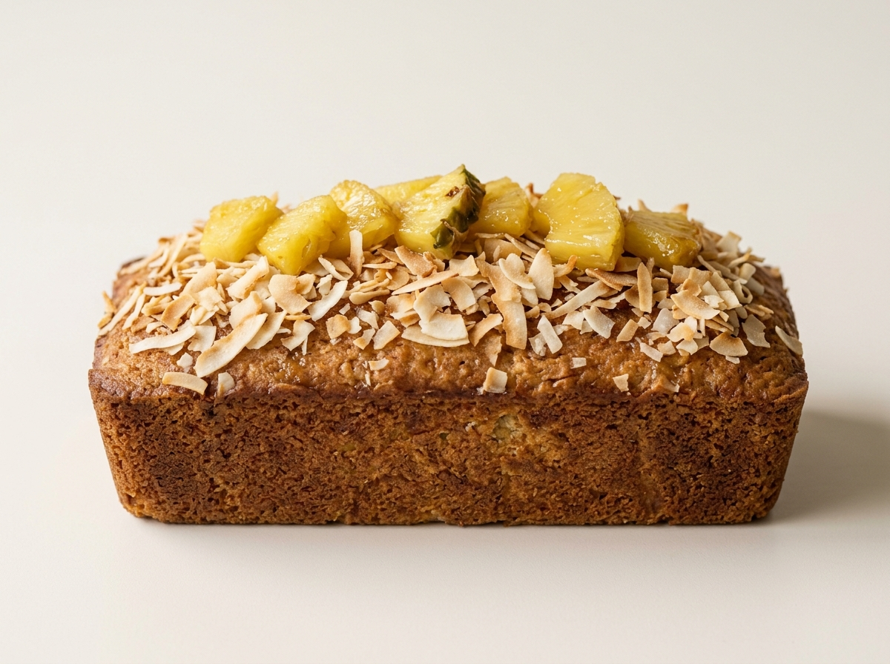

RECETA #022
Panqué de Coco Piña

Ingredientes
- 250 g de mantequilla a temperatura ambiente
- 1 lata de leche condensada
- 5 piezas de huevo
- Esencia oleica de coco, al gusto
- 150 g de crema de coco
- 250 g de coco rallado (de preferencia sin azúcar)
- 1 cucharadita de polvo para hornear
- ¼ cucharadita de bicarbonato
- 300 g de harina
- 150 g de piña en almíbar en trozos
- Rebanadas de piña en almíbar, al gusto, para colocar en el molde
Procedimiento
Engrasa el molde y precalienta el horno a 150°C al menos 10 minutos antes de hornear.
Acrema con el aditamento pala la mantequilla con la leche condensada por 5 minutos, deberá verse sin grumos.
Mezcla los huevos con la esencia de coco y agrégalos en forma de hilo, poco a poco, permitiendo que se integren.
Agrega la crema de coco y el coco rallado. Si se desea, agrega la piña en trozos.
Cierne los ingredientes secos e intégralos en dos partes, asegurándote de que se mezcle perfectamente.
Se sugiere colocar rebanadas de piña en almíbar al fondo del molde y, posteriormente, verter la masa hasta ¾ de la capacidad del molde.
Hornea por 50 a 60 minutos, dependiendo del tamaño del molde.
Opcional: para decorar, barniza el panqué ya frío con mermelada de chabacano o piping gel y luego rebósalo en coco rallado al gusto.